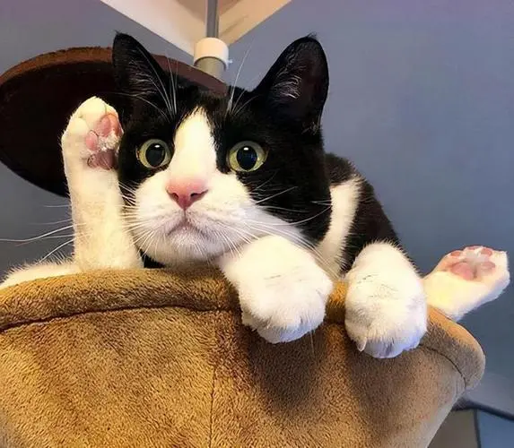
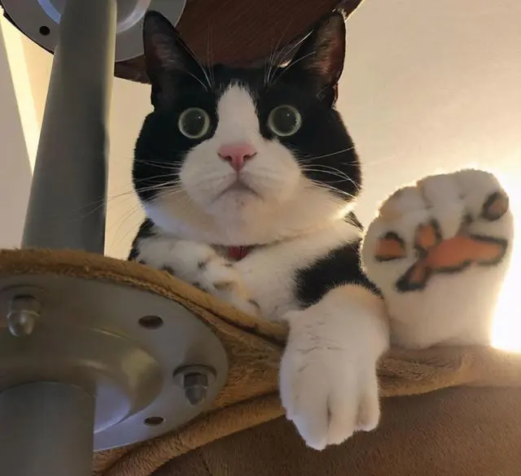
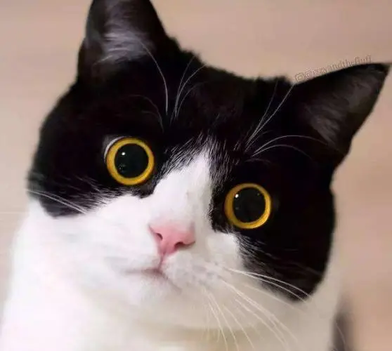

-

关于奶牛猫
所谓奶牛猫就是平时所说的黑白花，因其看起来像奶牛而得名。
奶牛猫是普通的家猫 （中华田园土猫种），都是属于杂交血统。很多的品种的猫因毛色的原因，杂交后都有可能生出黑白花来，所以现在的很多的奶牛猫具有一些贵族血统。
因为是杂交血统，奶牛猫的身价一般不高，不过它仍然深受人们喜欢。 -

奶牛猫的性格
1、喜欢睡觉 奶牛猫多数时间都在睡觉，每天能够达到14~15小时，每次睡眠时间不长，一般1小时左右，但次数多。它的睡眠时长也跟气候、发情期有关，暖和时睡眠时间长，发情期睡眠时间会减少。
2、独立性强 奶牛猫的天性是比较独立的，非常向往没有约束的生活，一般都是单独行动。领地意识也非常强，即使是家养的，也会保留自己的领地意识，对其他的猫咪可能会表现出不友好。
3、警惕性高 大多数猫咪的胆子是比较小的，奶牛猫也不例外，如果刚到一个新的环境，就会对周围的事物一直保持警惕，直到它适应了新环境，才会表现出自己的好奇心。 -

奶牛猫的优点
一、思维敏捷 奶牛猫可以说在土猫里面是属于比较机灵的一个，奶牛猫常常能够脑洞大开，干的事情也跟别人的猫咪不一样，所以奶牛猫总是能够做出很多我们意想不到的事情，有时候你会真以为奶牛猫听懂你说的话了！
二、忠心耿耿 奶牛猫虽然顽劣，而且常常都是往外跑的猫咪，但是奶牛猫没有忘记自己的家是在哪里，也没有忘记自己的主人，所以奶牛猫不管怎么跑都不会随随便便的就忘了自己家在哪！
五、互动性强 奶牛猫的互动性在猫咪里面可以排的上号的！